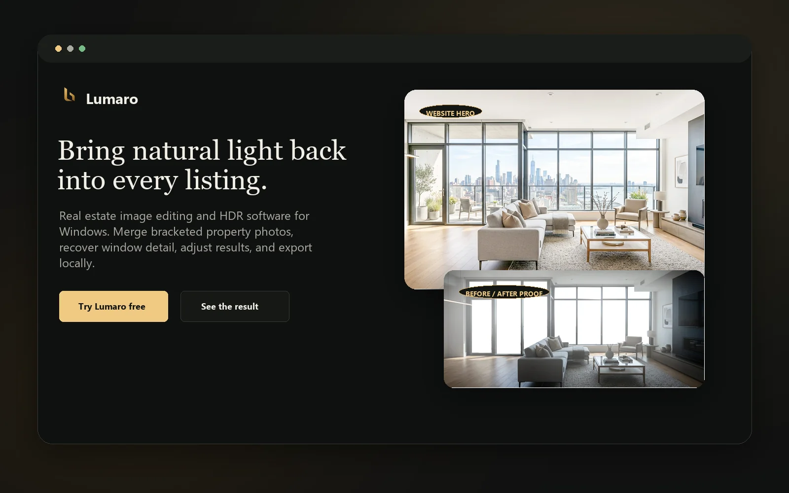
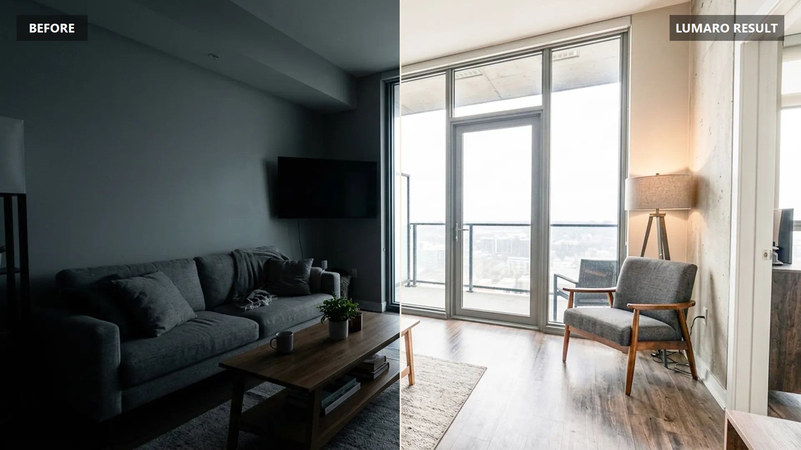
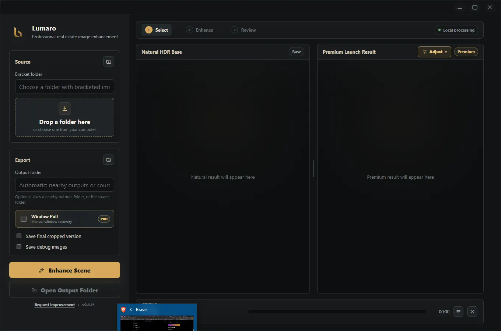
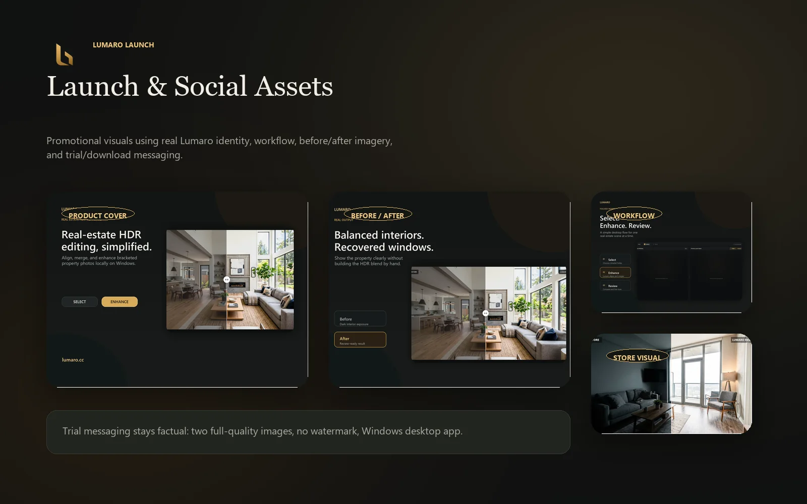

Immediate product clarity
Lead with the practical promise: faster real-estate image enhancement from bracketed photos.
Website · Product Launch
A launch-facing digital experience for Lumaro, built to explain the released product, show the workflow clearly, and support download intent without overwhelming visitors.

Challenge
The website needed to communicate what Lumaro does, who it is for, and why the workflow matters: local processing, bracket selection, before-and-after review, optional Window Pull, adjustments, and export.
Experience Structure
Lead with the practical promise: faster real-estate image enhancement from bracketed photos.
Show the path from folder selection through processing, review, adjustment, and export.
Highlight local processing and manual review instead of presenting automation as a black box.
Keep the route toward trial, purchase, or external product review easy to understand.
Product Visuals




Launch Assets

Outcome
The launch experience gives Lumaro a clear public-facing explanation for a released desktop product, connecting brand, product workflow, and commercial action in one place.